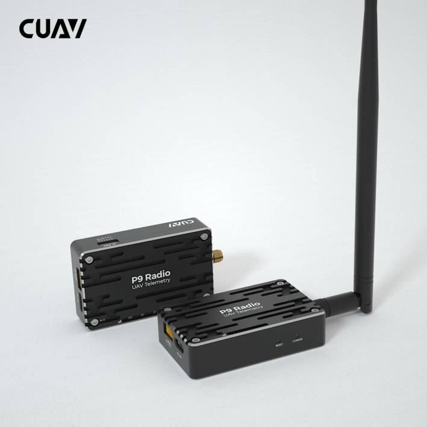
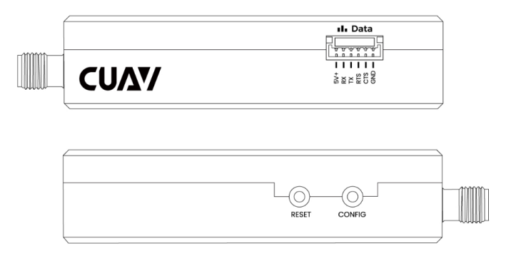
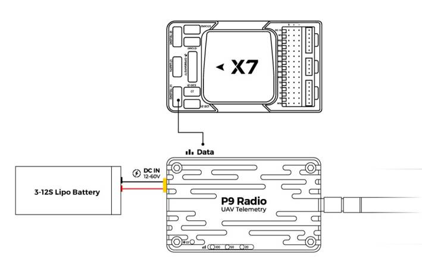

[copywiki destination=”copter,plane,rover,blimp”]¶
CUAV P9 Radio¶
P9 Radio is a long-range drone telemetry module developed by CUAV. It has high power, high speed and high receiving sensitivity, which is very suitable for UAV communication system.
Key Features¶
Up to 60KM long-distance transmission.（depending on the antenna and use environment).
902-928 MHz Working frequency
Support point-to-point, point-to-multipoint, relay communication and other communication methods.
1 Watt (+30dBm) transmit power.
Supports 12v~60V operating voltage.
Support high-speed frequency hopping technology, anti-interference.
Purchase¶
Order from cuav store. or from here.
Technical Specifications¶
Working frequency
902-928 MHz
Transmission technology
Frequency Hopping
Transfer Protocol
Transparent transmission
Forwarding error detection
Hamming /BCH/Golay/Reed-Solomon
Error detecting
Error Detection 32 bits of CRC, ARQ
Encrypt
Optional (see –AES option)
Range
Up to 60km (depending on the antenna and use environment)
Sensitivity
-110 dBm @ 115.2 kbps, better than -108 dBm @ 172.8 kbps, better than -107 dBm @ 230.4 kbps
Output power
100mW - 1W (20-30dBm) （Default：1W)
Serial interface
3.3V CMOS TTL
Antenna gain
5 dbi
Baud rate
Up to 230.4kbps, 57600 default
Link Rate
115 - 276 kbps
Operating Modes
Auto Routing, Store and Forward,Self Healing, Packet Routing Modes
Operating Voltage
12V-60V
Power consumption
Sleep <1mA, Idle <3.5mA, RX:35mA~80mA, TX:800mA~1200mA
Operating temperature
-40℃ ~ +85℃
Humidity
5% ~ 95%(Non-condensing)
Size
5g(No antenna); with Antenna:31g
Weight
65mmx40mmx16.5mm
Pinouts¶
Connection with Flight Control¶
V5+/v5 nano/X7/X7 PRO/NORA ： Green connector is connected autopilot’s telemetry UART, white connector is connected to P8 radio.